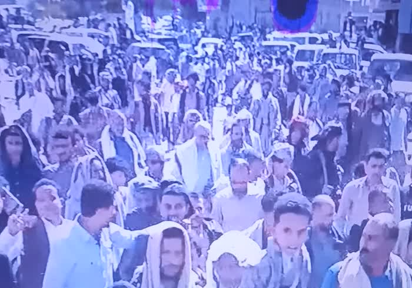
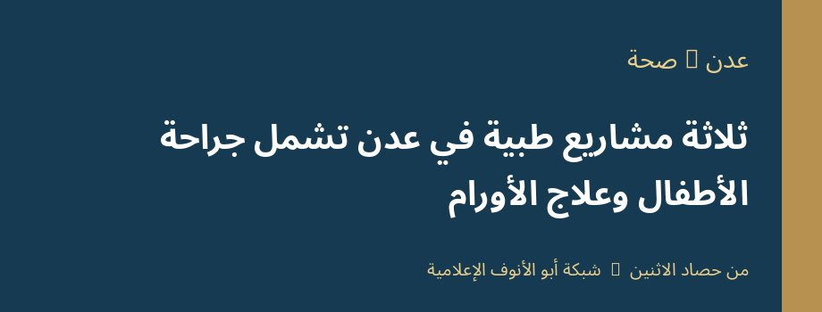

العدد الجامع ٥١ · الأحد والاثنين ٢٢ و٢٣ نوفمبر ٢٠٢٦
ما وراء الخبر • ملف تعز
ما وراء التشييع في تعز

حشود التشييع في تعز · لقطة من التسجيل التلفزيوني المرفق بالعدد
خرج أهالي تعز لتشييع القائد الكحلاني. وفي قراءة عبده سالم الفقيه، يفتح مشهد الوداع سؤالاً عن مسؤولية المجتمع الدولي تجاه المدنيين والطرق التي يصلون عبرها إلى مدارسهم ومستشفياتهم.
التقرير الصوتي • من رسالة الحشود إلى مساءلة المجتمع الدولي
6 دقائق و6 ثوانٍ
الأحد 22 نوفمبر
22 نوفمبر · تعز | تعليم
تعليق الدراسة الحضورية يشمل المدارس الحكومية والأهلية
مادة تعليمية توضيحية من أرشيف الشبكة
نشر «روكب اليوم» الأحد نص بيان مكتب التربية والتعليم في تعز عقب محاولات لفتح بعض المدارس. وكان المكتب قد أكد السبت 21 نوفمبر أن قرار التعليق ملزم، وأن العودة إلى الصفوف ترتبط بتوجيه رسمي وتوافر ظروف آمنة للطلاب والمعلمين.
حذّر عاملون صحيون في تعز، في تقرير مصور بثته الجزيرة الأحد، من تزايد إصابات الأطفال بالحصبة. ووصفوا صعوبة توفير اللقاحات واستمرار استقبال المرضى في مرافق محدودة الإمكانات، فيما تضطر أسر إلى شراء بعض المستلزمات من خارج المرفق الصحي.
أعلنت القوات الحكومية أنها صدّت هجوماً غربي تعز ونفذت غارات على مواقع للحوثيين في تعز ومأرب. وتزامنت هذه التطورات مع تحذيرات حقوقية من زراعة ألغام في غرب البلاد، بما يطيل أمد الخطر على السكان بعد انحسار الاشتباكات.
نقلت صحيفة العربي الجديد شهادة أسرة غادرت المضاربة ورأس العارة واستأجرت شقة غير مكتملة البناء في البريقة. وأوردت، نقلًا عن الوحدة التنفيذية لإدارة مخيمات النازحين، نزوح ١٬٧٩٣ أسرة في لحج بين ٦ و١٢ نوفمبر. وتصف الأرقام موجة النزوح السابقة لتاريخ نشر التقرير.
سلطة لحج تعلن سقوط ضحايا في قصف حافلات ركاب بالمقاطرة
بطاقة تحريرية توضيحية من إعداد الشبكة
قالت السلطة المحلية إن قصفاً طال حافلات ركاب وشاحنات تجارية في مديرية المقاطرة، وإن مدنيين قُتلوا وأُصيبوا. ونسبت القصف إلى الحوثيين، وفق ما نقلته الجزيرة في تغطيتها للاثنين.
قال المتحدث باسم القوات المسلحة ماجد النزيلي إن الجيش رصد إطلاق صاروخ باليستي من صعدة باتجاه عدن، وإن الصاروخ سقط في ذمار. ونسب الإطلاق إلى الحوثيين وحذّر من المخاطر التي تطال المدنيين على امتداد مسار الصواريخ.
أوردت تغطيتان لنشرة السوق والتجارة الصادرة عن منظمة الأغذية والزراعة أن نحو 18.7 مليون شخص في اليمن يواجهون انعداماً حاداً في الأمن الغذائي. وتربط النشرة صعوبة شراء الغذاء بارتفاع تكاليفه وتضرر طرق الإمداد والنزوح وضعف تمويل المساعدات.
ثلاثة مشاريع طبية في عدن تشمل جراحة الأطفال وعلاج الأورام

بطاقة تحريرية توضيحية من إعداد الشبكة
دشّن مركز الملك سلمان للإغاثة ثلاثة مشاريع بالتنسيق مع وزارة الصحة. وتستهدف الفرق إجراء 50 عملية للأطفال و50 عملية في المسالك البولية، إلى جانب توفير العلاج الكيماوي لستين طفلاً على مدى ثلاثة أشهر. وتمثل هذه الأعداد أهداف المشاريع عند إطلاقها.
الخارجية تبحث مع سفراء اليمن نتائج الجولة الأوروبية
بطاقة تحريرية توضيحية من إعداد الشبكة
ترأست وزيرة الخارجية أفراح الزوبة اجتماعاً مرئياً مع السفراء ورؤساء البعثات. واستعرضت مباحثاتها الأوروبية بشأن التعاون الاقتصادي والتنموي ودعم قدرات اليمن على حماية موانئه وسواحله، إلى جانب أولويات الخدمات القنصلية للمغتربين.
 ما وراء الخبر • ملف تعز
ما وراء الخبر • ملف تعز